GENE 46100 — Unit 01
2026-04-16
Before any math, text is split into tokens — the atomic units the model works with.
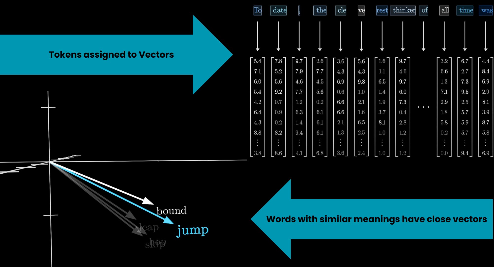
Source: 3Blue1Brown — What is a GPT?
Each token maps to a vector — a list of numbers. This is what the model actually computes with.
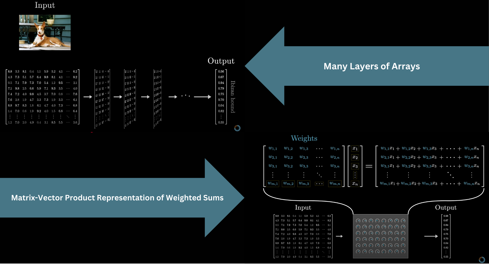
The numbers start as a lookup (same token = same vector). Context changes them later.
Source: 3Blue1Brown — What is a GPT?
The first thing a transformer does: look up each token in the embedding matrix W_E.
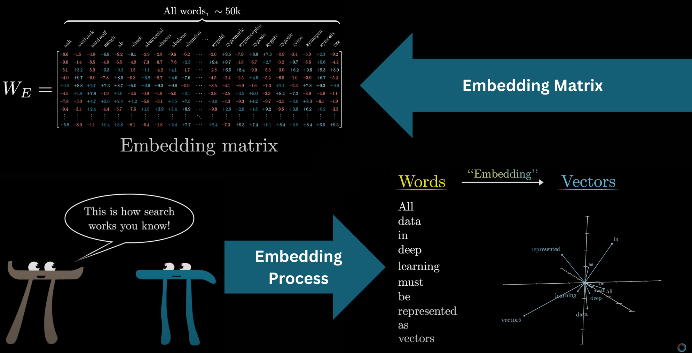
GPT-3: vocabulary = 50,257 tokens × 12,288 dimensions → 617 million weights just in this one matrix.
Source: 3Blue1Brown — What is a GPT?
Word vectors are not random. Words with similar meanings end up close together in the high-dimensional space.
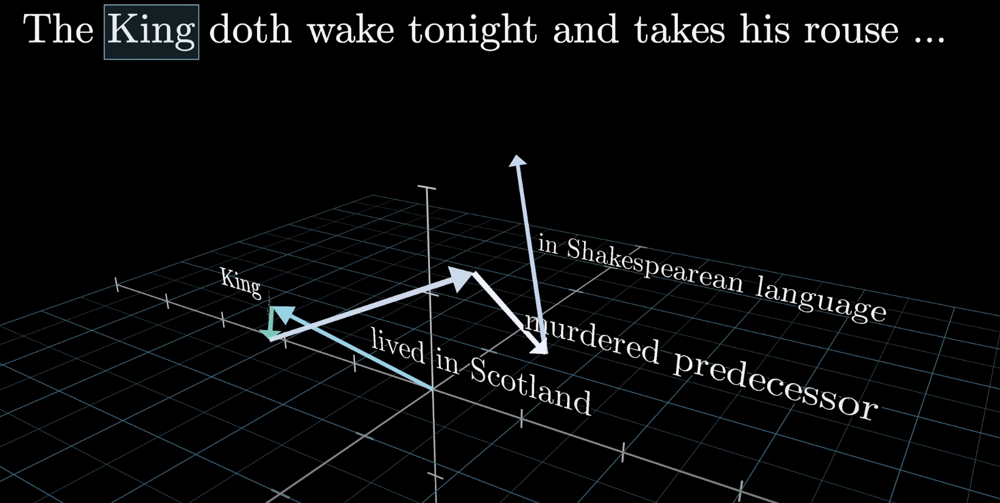
Source: 3Blue1Brown — What is a GPT?
The difference between “man” and “woman” vectors is similar to the difference between “king” and “queen.”
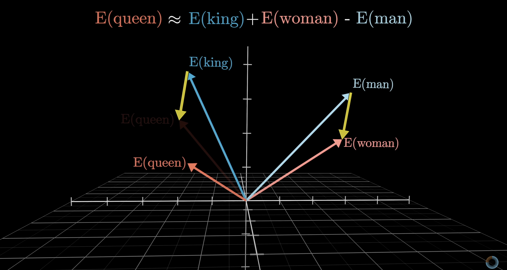
There is a gender direction in embedding space — not programmed in, learned from text.
Source: 3Blue1Brown — What is a GPT?
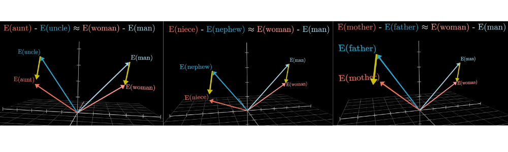
The same direction that encodes gender also generalizes across many word pairs — it’s a stable geometric feature of the space.
Source: 3Blue1Brown — What is a GPT?
The difference between country and capital vectors is consistent across examples.
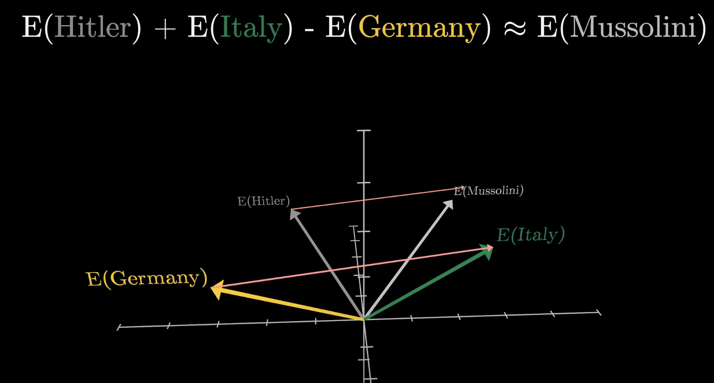
Subtracting “Germany” from “Italy” and adding to “Hitler” lands near “Mussolini.” Meaning lives in geometry.
Source: 3Blue1Brown — What is a GPT?
The dot product is how the model asks: how similar are these two vectors?
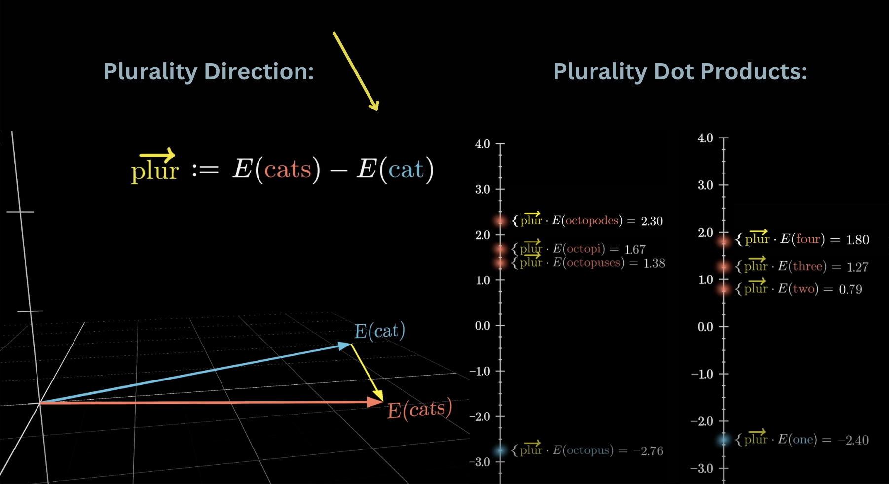
Source: 3Blue1Brown — What is a GPT?
Multiply corresponding components, then sum.
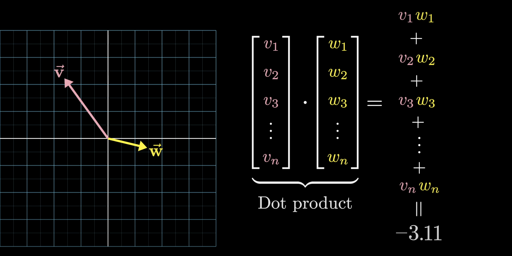
This simple operation is the core computation inside attention, inside every linear layer — it appears thousands of times per forward pass.
Source: 3Blue1Brown — What is a GPT?
The model processes a fixed window of tokens at once.
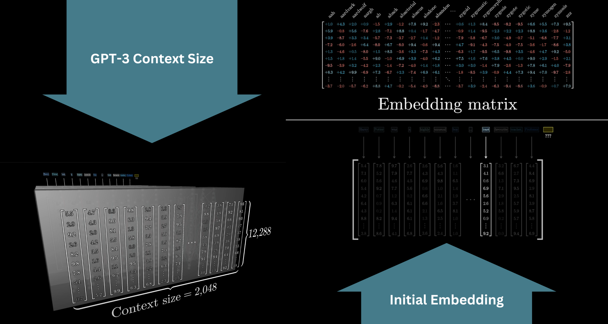
GPT-3 context = 2,048 tokens. Modern models extend this to 100k+. Everything outside the window is invisible to the model.
Source: 3Blue1Brown — What is a GPT?
Initial vectors encode the word alone. As vectors flow through the network, they absorb context.
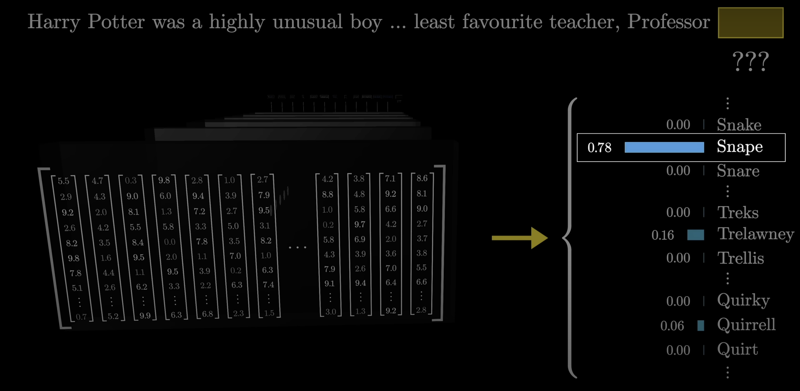
“Snape” in a sentence about potions → different final vector than “Snape” in a sentence about betrayal. Same starting point, different destination.
Source: 3Blue1Brown — What is a GPT?
After all transformer layers, the final vector must become a probability distribution over the vocabulary.
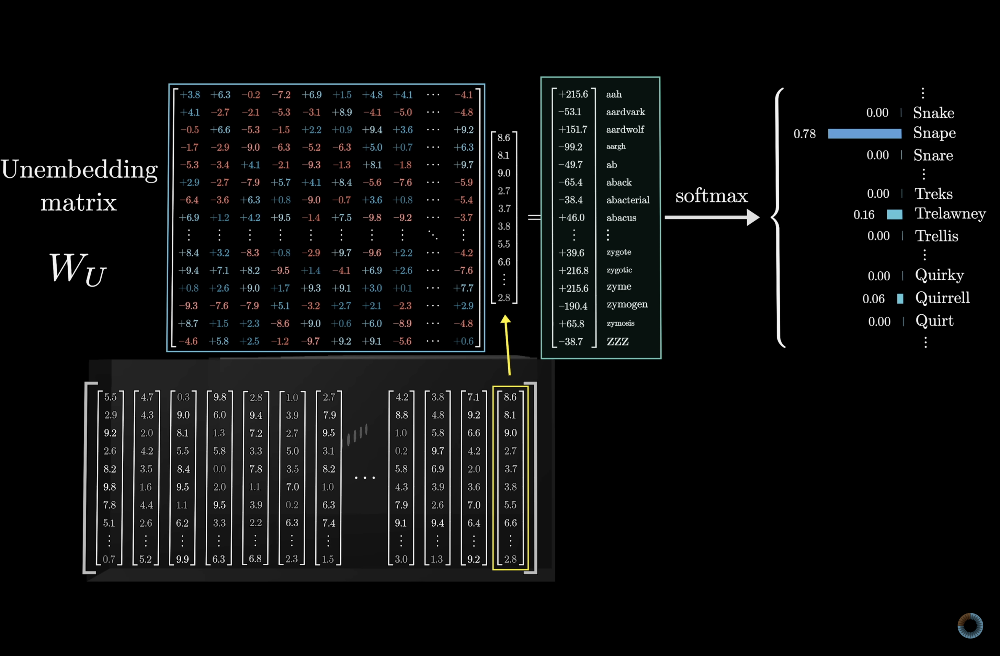
The unembedding matrix W_U maps the final vector back to one score per vocabulary token. Same dimensions as W_E, transposed.
Source: 3Blue1Brown — What is a GPT?
Raw scores (logits) can be any number. Softmax converts them into a valid probability distribution.
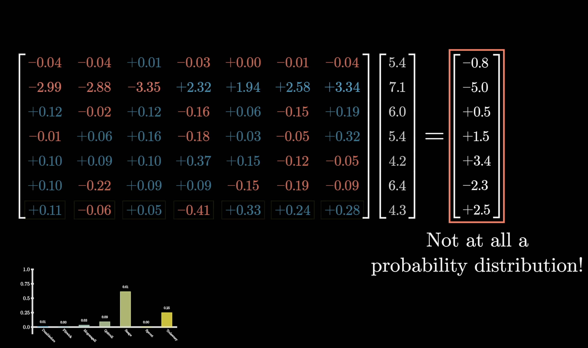
Source: 3Blue1Brown — What is a GPT?
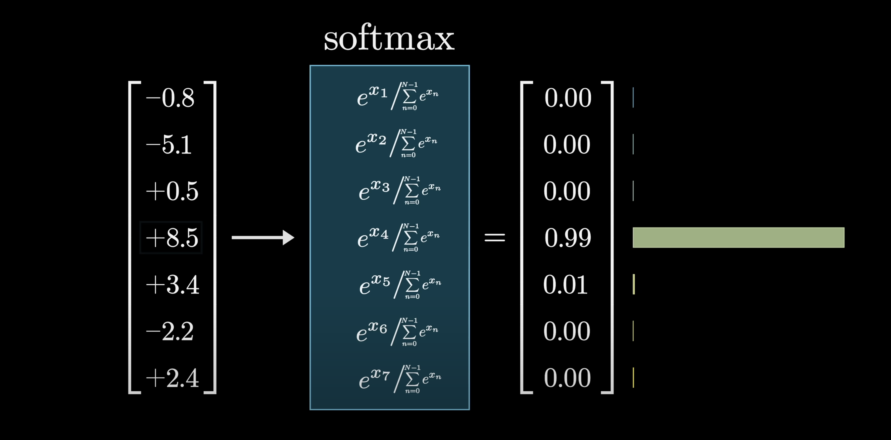
Large differences between scores → one token dominates. Small differences → distribution spreads out.
Source: 3Blue1Brown — What is a GPT?
Divide logits by temperature \(T\) before softmax:
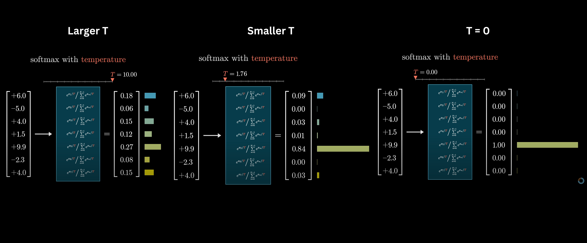
| Temperature | Effect |
|---|---|
| \(T < 1\) | Sharper — model is more decisive |
| \(T = 1\) | Default |
| \(T > 1\) | Flatter — more random, more creative |
| \(T \to 0\) | Always picks the top token (greedy) |
Source: 3Blue1Brown — What is a GPT?
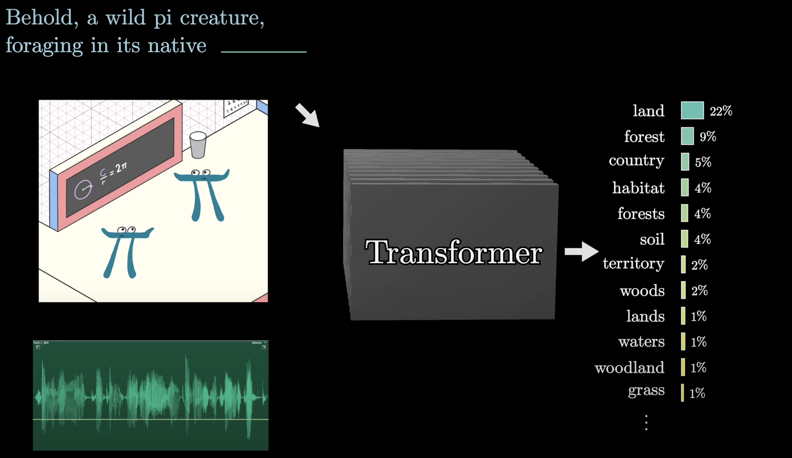
Token → W_E → transformer layers → W_U → softmax → sample next token.
Source: 3Blue1Brown — What is a GPT?
We have vectors. We have dot products. Attention uses both: each token’s vector queries other tokens’ keys to decide how much to attend.
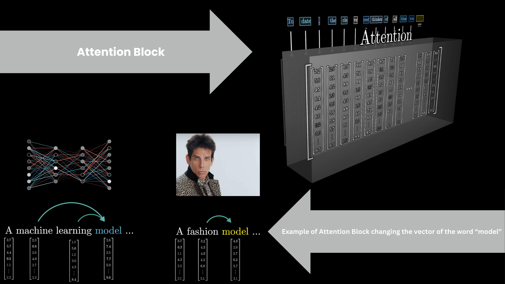
The result: vectors update each other based on relevance. “bank” near “river” shifts toward riverbank. This is the mechanism that makes transformers powerful.
Source: 3Blue1Brown — What is a GPT?
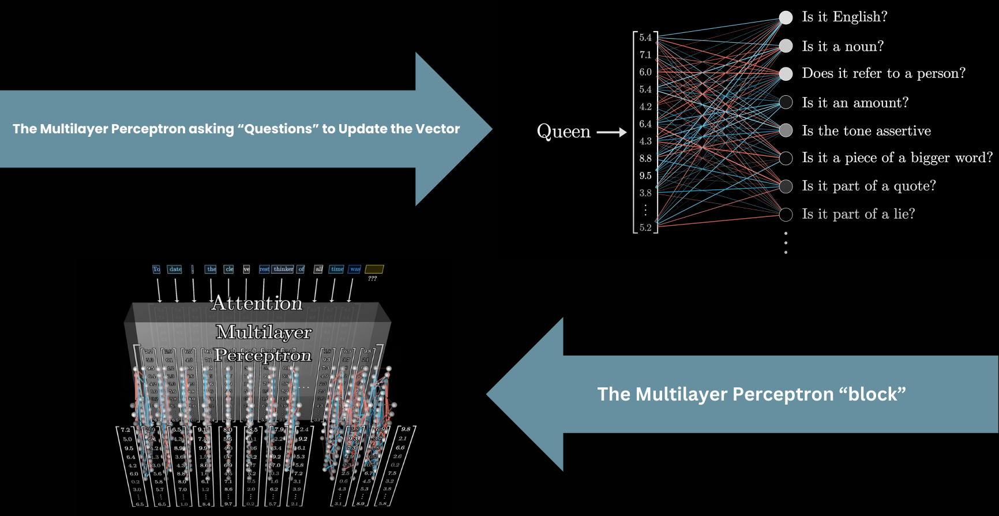
Running many attention heads in parallel lets the model track different types of relationships simultaneously — syntactic, semantic, positional.
Next deck: the full Q/K/V math and how this works in code.
Source: 3Blue1Brown — What is a GPT?
GENE 46100 · Deep Learning in Genomics